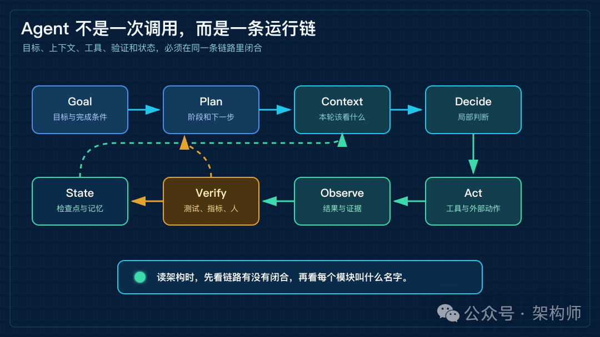
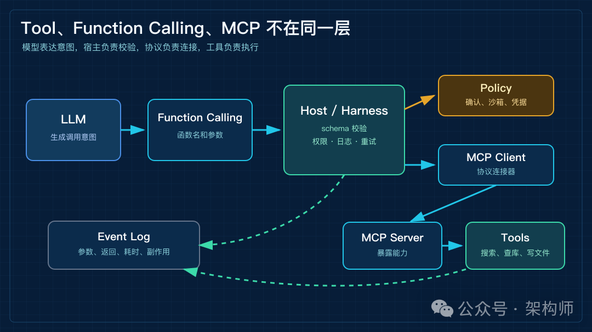
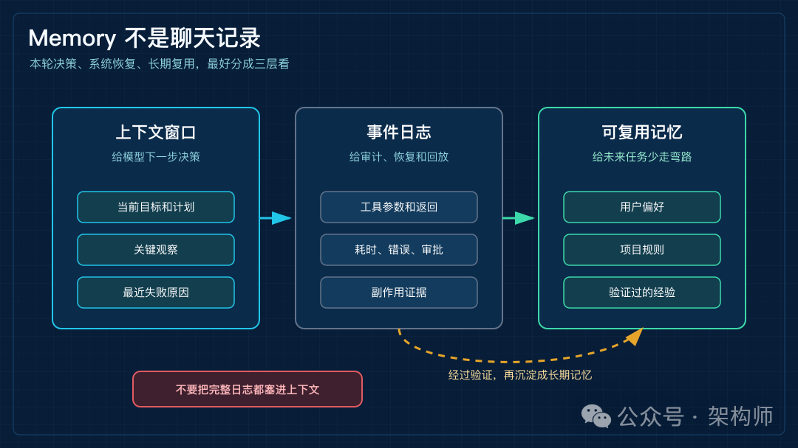
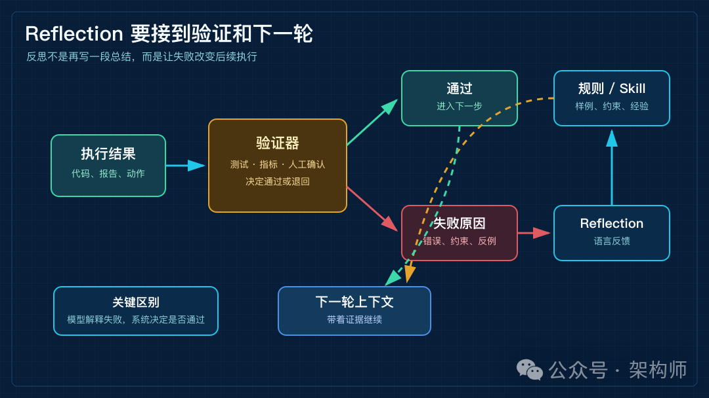

AI Agent 架构全链路拆解：从 Planner、Tool、MCP 到 Memory 和 Reflection
来源：微信公众号 归档日期：2026-10-05 抓取状态：成功 原文字符：12926｜配图：5 张
摘要速览
- 架构师（JiaGouX） 我们都是架构师！ 架构未来，你来不来？ 最近讨论 Agent，经常会碰到同一个问题： Planner、Tool、MCP、Memory、Reflection 这些词，到底是并列模块，还是一条运行链上的不同位置？ 这个问题不只是名词解释。落到系统设计，压力会集中到连接处：目标怎么变成完成条件，上下文怎么装进下一轮，工具调用怎么校验，副作用怎么记录，失败以后从哪里恢复。
核心内容
（待补充）
可执行启发
（待补充）
我的想法
（待补充）
原文沉淀
来源：https://mp.weixin.qq.com/s/5SXa7vHTiGYTQNSIR6a-Pg 平台：weixin｜作者：架构师 抓取方式：cdp｜字符数：13630｜图片：5
架构师（JiaGouX）
我们都是架构师！ 架构未来，你来不来？
最近讨论 Agent，经常会碰到同一个问题：
Planner、Tool、MCP、Memory、Reflection 这些词，到底是并列模块，还是一条运行链上的不同位置？
这个问题不只是名词解释。落到系统设计，压力会集中到连接处：目标怎么变成完成条件，上下文怎么装进下一轮，工具调用怎么校验，副作用怎么记录，失败以后从哪里恢复。
先把我的理解放前面：Agent 不是 LLM 加一串工具，而是一条带状态、验证和恢复能力的运行链。
Planner 和 Reasoning 更靠近决策过程，Function Calling 和 MCP 更靠近调用与连接，Session、Tracing、Memory、Reflection 把状态、观测和反馈带进来。团队把 Agent 接到产品、研发和运营流程时，这几层会挤在一起。只看模块名，像是都认识；一落到实现，边界就会冒出来。
这篇文章按一条链路来拆：
Goal -> Plan -> Context -> Decide -> Act -> Observe -> Verify -> State -> Next
这不是要把所有 Agent 产品画成同一张图。它只给后面的概念找一个坐标。我们看 Planner、Tool、MCP、Memory 和 Reflection 时，先看它们在运行过程中站在哪一段。
太长不看版
- Agent 不是一次 LLM 调用。
一次调用只处理输入和输出；Agent 还要处理目标、工具、状态、验证和恢复。
- Planner、Tool、MCP、Memory、Reflection 不在同一层。
有的管决策，有的管连接，有的管状态，有的管反馈。
- Function Calling 是调用表达方式，MCP 是协议层。
Tool 是能力本身，Harness 才把权限、日志、重试和验证接起来。
- Memory 不等于聊天记录。
上下文窗口、事件日志、可复用经验要分开看。
- Reflection 不是让模型自我表扬或自我批评。
它要接到测试、指标、人工确认、规则和下一轮上下文。
- 架构读法先放回执行现场。
先看目标怎么进来，再看动作怎么发生，最后看证据怎么留下。

Agent 运行链路
图 1：Agent 不是一次调用，而是一条带状态、验证和恢复能力的运行链。
Agent 不是一次 LLM 调用
先从一次模型调用说起。
一次 LLM 调用的结构是“输入上下文，输出文本”。模型可以解释问题、生成计划、给出代码，也能按约定输出结构化 JSON。调用结束以后，系统不会自动知道下一步该读哪个文件、哪个测试跑过、哪次 API 调用已经产生副作用。
Agent 多出来的是一套软件结构，让模型能在任务里持续推进，而不是只回答一次。
比如用户说：“帮我排查这个接口超时，修掉问题，补测试，并整理变更说明。”如果只是问答，模型最多给排查建议。Agent 则要把这句话当成任务：先理解目标和完成条件，再决定读日志、看 trace、查代码、运行测试、修改文件、复核 diff，最后交付说明。
Anthropic 在《Building effective agents》里区分了 workflows 和 agents。Workflow 是 LLM 和工具沿着预先写好的代码路径运行；Agent 则由 LLM 根据当前状态动态决定流程和工具使用。
这会影响架构取舍。路径稳定、分支明确、验收规则清楚的业务流程，用 workflow 成本低，观测点也清楚。任务中间存在未知分支，需要系统边执行边判断下一步时，再引入 Agent。
讨论 Agent 架构时，问题不只在“有没有七大模块”，还在于任务需要多少动态性，哪些环节写进代码路径，哪些判断留给模型。
| 场景 | 更像 Workflow | 更像 Agent |
|---|---|---|
| 流程路径 | 开发者预先写好 | 模型按当前状态选择下一步 |
| 输入变化 | 字段、格式、规则比较稳定 | 中途会出现未知分支 |
| 工具使用 | 固定顺序或少量分支 | 根据观察结果动态选择 |
| 验收方式 | 明确规则、固定检查项 | 需要阶段性证据和人工确认 |
| 适合任务 | 审核、抽取、报表、固定工单 | 排障、研究、代码修改、长链路执行 |
一个实用判断：能写成清楚状态机的，先按 workflow 做；状态机写不完整，才把不确定部分交给 Agent。
Goal：目标要变成完成条件
Agent 的入口不是一句漂亮的 prompt，而是一个要完成的目标。
目标这一步看起来简单，却会影响后面的边界。用户说“做一份行业研究”，系统至少要弄清楚交付物是什么，范围有多大，使用哪些来源，是否需要下载原文，是否要给出判断，最后用什么标准算完成。
如果这一步含糊，后面所有模块都会被拖歪。
Planner 会拆出错误步骤，Tool 会查错地方，Memory 会留下不该留下的信息，Reflection 也只能在错误目标上做自查。
在架构上，Goal 不等同于原始用户输入。它更接近一份任务契约：
- 交付物：最后产出什么形态，是答案、文档、代码、工单，还是可执行变更；
- 约束：哪些来源可用，哪些操作不能做，时间、成本、权限有什么限制；
- 验收：哪些证据能说明任务完成，哪些情况必须返回给人；
- 风险：哪些动作有副作用，哪些信息属于敏感输入。
任务契约不必做重。简单任务只需要几句话，复杂任务需要交代边界。后面的模块需要知道自己在为哪个结果工作。
Planner：不是把所有步骤一次写完
Planner 经常被解释成“把大任务拆成小步骤”。这样说没错，只是会让人以为规划就是开头生成一份路线图，然后照着走。
工程任务不会总是沿着开头计划一路走到底。
接口超时可能来自慢 SQL，也可能来自外部服务重试；文档写作可能查到一半发现原文版本变了；代码修复可能在测试阶段暴露另一个边界条件。计划如果不能随着观察结果调整，会提前失效。
在这里，Planner 管的是阶段，不是一次性剧本。
它要决定当前阶段的目标、允许使用的工具、需要保留的证据，以及进入下一阶段的条件。复杂一点的系统，还会把计划拆成可回放的步骤，让每一步都有输入、动作、输出和状态。
这里还要把 Planner 和 Workflow 分开。
Workflow 是开发者预先定义好的流程。它适合路径稳定的任务，例如固定格式审核、字段抽取、标准化报表。Planner 则处理动态任务：在当前状态下选下一步，必要时重排阶段，甚至缩小目标或请求人补充信息。
两者不是谁替代谁。成熟系统会混用：稳定部分用 workflow 固化，未知部分让 Agent 规划。这个办法不新鲜，但控制成本低。
Context：Agent 的下一步，先由上下文决定
一些 Agent 架构图会把 Reasoning 放在中间，好像模型思考能力决定了后续结果。
模型当然重要。但模型能做出什么判断，先受它这一轮看到的上下文限制。
Karpathy 用“context engineering”替代“prompt engineering”，说的不是把提示词写漂亮，而是把任务说明、示例、RAG 结果、工具、状态、历史、压缩摘要等信息，以合适的形式放进下一步上下文。
信息不足，模型没有依据。信息过载，成本会上升，干扰也会增加。另一个麻烦是，一些信息并不该直接进入模型窗口。工具调用日志、权限记录、完整文件 diff、外部 API 响应，都要进入系统记录，但下一轮只需要其中一小部分。
Context 层要先分清三类信息。
| 信息对象 | 主要用途 | 放在哪里 | 是否每轮给模型 |
|---|---|---|---|
| 当前上下文 | 支撑下一步判断 | 模型窗口 | 是，但要筛选 |
| 事件日志 | 审计、恢复、回放 | 系统存储 | 不一定 |
| 可复用记忆 | 下次任务少走弯路 | 记忆库或规则库 | 按需召回 |
当前目标、阶段计划、可用工具、关键观察和最近失败原因，可以进入模型上下文。完整工具参数、原始返回、审批记录和执行耗时，更适合留在事件日志里。用户偏好、项目规则和稳定失败模式，要经过验证，再进入长期记忆。
把 Memory 直接等同于聊天记录，系统边界会变窄。聊天记录只是历史材料。Agent 需要的是可检索、可压缩、可审计、可迁移的状态。
Reasoning：它负责局部决策，不负责整个系统可靠
ReAct 论文把 reasoning 和 acting 放到同一个循环里看。它的关键点不是让模型“想很久”，而是让模型一边产生推理轨迹，一边执行任务相关动作；动作把模型接到外部知识库或环境，观察结果再影响下一步。
放到工程里，Reasoning 对应当前轮次的局部决策。
模型看到目标、上下文、计划、工具说明和上一步结果，然后判断下一步要做什么。它可能决定查一段日志，可能决定读取某个配置，也可能决定停止并交付。
但 Reasoning 覆盖不了三类责任。
它不能替系统做权限。模型说要删文件，不代表系统就能删。
它不能替系统保存状态。模型能复述历史，不等于系统拥有可恢复的事件记录。
它也不能替系统验收。模型说“已经修好”，不能代替测试、指标、代码 diff 或人工确认。
一些 Agent 实现会把这些责任都塞进 prompt：提醒模型小心工具、提醒模型自查、提醒模型记住规则。prompt 有用，但它不是架构边界。权限、状态、验证和恢复，仍然要放到模型外面的运行时里。
Tool：模型的动作空间
Tool 是 Agent 能影响外部世界的方式。
搜索、读文件、写文件、查数据库、发 HTTP 请求、运行测试、打开浏览器、创建工单、发送消息，都属于工具。没有工具，模型只能输出文本；有了工具，模型才有动作空间。
但 Tool 不是简单地“越多越好”。
工具越多，模型选择空间越大，调用成本、权限风险和调试难度也会上来。一个搜索工具和一个生产数据库写入工具，风险不是一个量级。一个幂等查询和一个发起退款的动作，也不适合放在同一个确认策略里。
工具层要回答几个问题：
- 输入 schema 是什么，参数是否能被严格校验；
- 工具是否有副作用，副作用能不能撤销或补偿；
- 调用前是否需要权限检查或人工确认；
- 调用失败时，错误信息怎样返回给模型；
- 调用结果多大，哪些进入上下文，哪些只进日志；
- 工具调用是否有超时、取消、重试和幂等设计。
工具接入时，我会先按副作用分层。
| 工具类型 | 例子 | 主要风险 | 架构处理 |
|---|---|---|---|
| 只读查询 | 搜索、读文件、查日志 | 结果污染上下文 | 摘要、引用、来源标记 |
| 可修改本地状态 | 写文件、改配置、跑脚本 | 覆盖、误删、不可复现 | diff、备份、审批、回滚 |
| 可影响外部系统 | 发邮件、退款、改订单 | 真实副作用 | 权限、确认、幂等键、审计 |
| 高成本调用 | 大规模抓取、长任务运行 | 成本和资源失控 | 配额、超时、取消、预算 |
OpenAI Agents SDK 里把 function tools 做成带 schema 和 Pydantic 校验的能力，同时提供 guardrails、sessions、tracing 等原语。这个组合说明了一件事：工具不是孤立模块。工具一旦进入 Agent Loop，就会牵动输入校验、状态保存、流程追踪和安全检查。
Function Calling：把意图变成结构化调用
Function Calling 经常和 Tool 混在一起说，但 Function Calling 是“调用表达方式”。
模型并不直接执行函数。它输出的是“我想调用哪个函数，参数是什么”。宿主应用解析这个结构，校验参数，再决定是否执行对应工具。
这里有一个边界要先放清楚。
如果模型输出的是自然语言，例如“帮我查一下数据库”，宿主要靠猜。Function Calling 把这句话变成结构化对象，例如：
{
"name": "query_orders",
"arguments": {
"user_id": "u_123",
"limit": 5
}
}结构化之后，系统才能做 schema 校验、权限判断、审计记录和错误处理。参数不合法就拒绝，权限不够就请求确认，工具超时就返回明确错误。
Function Calling 解决的是“模型意图如何被机器读懂”。它不自动解决工具是否安全、结果是否正确、动作是否应该发生。
MCP：协议层，不是工具本身
工具数量上来以后，另一个问题会出现：每个系统都单独接一套 API，Agent 宿主会变成集成泥潭。
MCP（Model Context Protocol）要解决的是连接方式。2025-06-18 版规范里，基本角色是 Host、Client 和 Server。Host 是发起连接的 LLM 应用，Client 是宿主内的连接器，Server 提供上下文和能力。
MCP Server 提供三类能力：Resources、Prompts、Tools。Client 侧还有 Sampling、Roots、Elicitation 等能力。从这个设计看，MCP 不只是“工具列表标准化”。它还把数据、提示模板、用户补充信息和文件边界都纳入了协议讨论。
不过，MCP 不是安全边界的全部。
规范明确提到用户同意、数据隐私、工具安全和 sampling 控制，也说明协议本身不能在协议层强制实现这些原则。MCP 能规范消息和能力暴露方式，但授权、审计、沙箱、数据脱敏、凭据隔离，仍然要由宿主应用和组织策略完成。
这也是 Tool、Function Calling 和 MCP 的关系：
- Tool 是能力本身，比如搜索、查库、写文件；
- Function Calling 是模型表达调用意图的结构化方式；
- MCP 是把外部上下文和能力接入 Agent 宿主的协议层；
- Harness 负责把调用放进权限、状态、验证和恢复机制里。
这几层分清以后，讨论工具接入时会少一些混乱。

Tool、Function Calling、MCP 和 Harness 的关系
图 2：模型表达调用意图，宿主负责校验与治理，MCP 负责连接外部能力。
Observe：工具结果不是直接塞回模型
工具执行完，会返回观察结果。这个结果看起来只是 Agent Loop 里的中间产物，但这里经常出问题。
结果体量可能超过模型下一轮需要的范围。搜索结果、日志、测试输出、网页正文、数据库查询，全部塞回上下文，会浪费 token，也会干扰判断。
结果来源也可能不可信。网页、用户上传文件、第三方系统返回文本，可能包含诱导模型改变规则的内容。系统要区分“工具返回的数据”和“可以被当成指令的内容”。
有些结果还带着副作用证据。比如订单已经退款、文件已经修改、邮件已经发送。这些信息不能只靠模型记住，必须进入事件日志。
Observe 层要做两件事：把原始结果保存下来，再把适合模型阅读的摘要、证据或错误信息放回上下文。
系统稳定性的差异，有一部分就在这里。不是模型强一点，而是工具结果经过了过滤、摘要、引用和错误归类。
Memory：把上下文、事件和可复用经验分开
Memory 是 Agent 里边界比较宽的概念。
一种常见说法是短期记忆、长期记忆、工作记忆。这个分类有帮助，但工程上还要再落一层：它们到底存在哪里，什么时候读出来，以什么形式进入下一轮。
工程实现里，Memory 可以先拆成三种对象。
| 对象 | 面向谁 | 存什么 | 常见错误 |
|---|---|---|---|
| 上下文窗口 | 模型下一步决策 | 当前目标、计划、关键观察、失败原因 | 把完整日志都塞进去 |
| 事件日志 | 系统恢复和审计 | 工具参数、返回、耗时、错误、审批、副作用 | 只让模型“记住” |
| 可复用记忆 | 未来任务 | 用户偏好、项目规则、稳定失败模式、验证过的经验 | 把一次偶然结果写成规则 |

Memory 的三层读法
图 3：上下文窗口、事件日志和可复用记忆，解决的是三类不同问题。
OpenAI Agents SDK 把 Sessions 称为保持 Agent Loop 工作上下文的持久记忆层，又提供 Tracing 来可视化、调试和监控 workflow。这给了一个参照：Session 让任务连续，Tracing 让过程可见，Memory 让经验能复用。
这三层不能互相替代。
聊天记录能帮模型回看对话，但任务失败后的恢复要靠事件日志。事件日志如果没有进入上下文装配，模型下一步仍然看不到重点。长期记忆也需要验证来源，否则系统可能把一次偶然失败写成永久规则。
Memory 的关键不是“存得多”，而是“什么时候把什么拿出来”。
Reflection：反思要接到验证和改进
Reflection 常被翻译成反思。“反思”这个译法会把关注点带到模型自我复盘，好像下一次表现会自然改善。
Reflexion 论文确实提供了一个重要方向：它不更新模型权重，而是让 Agent 根据任务反馈生成语言形式的反思，并把这些反思文本放进 episodic memory buffer，用于后续 trial。
这个思路的价值在于：Agent 的改进不一定只发生在训练模型权重里，也发生在语言反馈、记忆和下一轮决策中。
但生产系统里，Reflection 不能只靠模型自我感觉。
不同任务的反馈来源不一样。代码任务看单元测试、类型检查、浏览器截图、日志和代码审查；客服任务看订单状态、退款结果和用户确认；写作任务看原文核对、引用检查和结构复审。
模型负责解释失败、总结原因、提出下一步。但“是否通过”适合交给可检查的验证器判断。
在系统里，Reflection 可以拆成两层。
一层是反馈生成：从测试失败、工具错误、用户补充、审查意见里提炼问题。
另一层是反馈生效：把稳定问题写入下一轮上下文、规则、评测样例、技能文档或版本化配置。

Reflection 反馈闭环
图 4：Reflection 的价值不在总结，而在把失败原因带进规则、样例和下一轮上下文。
JGX 最近几篇文章一直在看这个方向。9 月 25 日那篇讲 Harness 时，说的是模型提出下一步，Harness 把这一步放进可控运行时。10 月 3 日讲 Claude.dev 时，重点是错误要留下证据，进入 eval、规则和版本化改进。10 月 4 日讲 Claude Code Mods，又看到运行时控制点正在产品化。
这三篇不是分散话题。放在 Agent 架构里，它们都指向同一个问题：Agent 出错以后，系统怎样让这个错误对下一次有用。
Output 和 Interaction：交付不只是最后一句话
Agent 的输出也要单独看。
演示场景里，Agent 最后输出一段“任务已完成”。但真实系统的交付物可能是 PR、报告、表格、邮件草稿、客服工单、数据库变更、部署记录，或者一组带证据的结论。
这时，Output 不只是自然语言回答，而是任务状态、产物和证据的组合。
交互方式也会跟着变。普通 Chat UI 适合问答，但 Agent 做长任务时，用户需要看到计划、当前阶段、正在调用的工具、已产生的变更、风险确认和可回滚点。开发工具里的 diff、测试结果、运行日志和审批按钮，都属于 Agent 交互的一部分。
Andrew Ng 提到过三层 loop：agentic coding loop、developer feedback loop 和 external feedback loop。Agent 可以几分钟内写代码、测试、再改；开发者反馈可能隔几十分钟或几个小时出现；外部用户反馈周期更长，可能要等灰度、A/B 测试或真实使用。
这三个循环的时间尺度不同，不能都压进模型的一次思考里。
Agent Loop 解决眼前下一步。开发者反馈决定目标和取舍。外部反馈决定系统长期是否真的变好。架构如果不区分这些循环，就会把“模型继续做”误当成“系统在进步”。
Harness：把模块接成可控运行时
前面几层要一起工作，需要模型外面的 Harness 把它们接起来。
Harness 不一定是单独产品。它是一组运行时职责：
- 上下文装配：决定模型下一轮看到什么；
- 工具路由：把模型意图转成可执行动作；
- 权限控制：判断动作是否允许、是否需要确认；
- 状态保存：记录计划、事件、检查点和副作用；
- 验证机制：用测试、规则、指标或人工确认判断结果；
- 追踪观测：让过程能调试、复盘和回放；
- 恢复停止：处理超时、取消、重试、回滚和人工接管。
Harrison Chase 转述的 Meta-Harness 讨论里提到，Agent 的持续学习不只发生在模型层，也可能发生在 harness layer 和 context layer。这个观察能对上工程实践。系统改进有时不来自模型权重，而来自上下文装配、工具定义、校验规则、评测样例和恢复策略。
所以这里把 Harness 单独拎出来看。
如果只看模型输出，就会把 Agent 当成“会思考的接口”。如果只看工具列表，就会把 Agent 当成“自动调用 API 的机器人”。但顺着 Harness 看，Agent 是一个把不确定决策放进受控流程的软件系统。
五组概念分开看
最后把几组概念收一下。
| 容易混的说法 | 更准确的拆法 | 架构上的影响 |
|---|---|---|
| Planner = Workflow | Planner 处理动态阶段，Workflow 固化稳定路径 | 稳定部分写进代码，未知分支交给模型判断 |
| Reasoning = Reflection | Reasoning 面向当前轮次，Reflection 面向反馈改进 | 当前决策和长期改进分开设计 |
| Tool = MCP | Tool 是能力，MCP 是接入协议 | 协议不能替代权限、审计和沙箱 |
| Memory = 聊天记录 | Memory 包含上下文、事件日志和可复用经验 | 恢复、审计、复用分别需要不同存储 |
| Agent = LLM + Prompt | Agent 还需要循环、工具、状态、验证和交互 | 难点经常在模型外面的运行时 |
一句话概括：模块名只是入口，真正影响系统质量的是模块之间怎么传递信息、执行动作、留下证据。
从架构图回到几个问题
评估一个 Agent 架构时，我会先看模型下一轮到底读到了什么。任务说明、历史、工具、状态、检索结果和压缩摘要，哪些进入窗口，哪些留在事件日志里，系统要能解释清楚。
然后看工具调用的影响范围。Tool、Function Calling 和 MCP 只能说明能力如何表达和接入，不能替代访问控制。搜索、查库、写文件、退款、发消息，应该有不同的授权和确认策略。
失败恢复也要单独看。系统是否能找到最后一个确定完成的动作，取决于检查点、幂等设计和可回放日志。没有这些记录，重试可能变成让模型重新猜一次。
最后看完成证据。测试通过、指标恢复、文件 diff、外部接口状态、人工确认，都要和任务目标绑定，而不是只看模型最后一句“已经完成”。
这几个问题会把讨论带回工程现场，不只停在“有没有 Planner、有没有 Memory”。
| 评估点 | 要看的问题 | 证据形态 |
|---|---|---|
| 上下文 | 模型下一轮到底读到了什么 | prompt 片段、检索结果、摘要策略 |
| 工具调用 | 动作边界和副作用在哪里 | schema、权限、审批、幂等键 |
| 失败恢复 | 系统能否回到确定状态 | 检查点、事件日志、可回放记录 |
| 完成判断 | 任务怎样算结束 | 测试、指标、diff、人工确认 |
| 长期改进 | 错误是否进入下一次 | 规则、eval、Skill、长期记忆 |
模块当然重要。没有 Planner，复杂任务缺少阶段约束；没有工具，模型只能说不能做；没有 Memory，长任务缺少连续性；没有 Reflection，错误进不了下一轮。
但模块名本身不保证系统可靠。可靠性来自模块之间的运行关系：信息怎么流动，动作怎么执行，状态怎么保留，结果怎么验证。
最后
Agent 架构可以从七八个模块讲起，但不宜停在模块清单。
一种可落地的看法，是把 Agent 当成一条全链路：目标进入系统，计划约束阶段，上下文喂给模型，模型做局部决策，工具和协议接到外部世界，观察结果回到系统，验证器确认进展，状态和记忆支撑恢复与改进。
这条链路走通了，Planner、Tool、MCP、Memory、Reflection 才不只是概念，而是在同一个运行时里各自承担清楚的职责。
Agent 难的地方，也在这里。
关键不在于把模型包装成一个“会思考的人”。更值得投入的，是把模型每一次不确定的下一步，放进一个可控制、可验证、可恢复的系统。
参考资料
- Anthropic，《Building effective agents》（https://www.anthropic.com/engineering/building-effective-agents）
- Model Context Protocol，Specification 2025-06-18（https://modelcontextprotocol.io/specification/2025-06-18）
- OpenAI，《OpenAI Agents SDK》（https://openai.github.io/openai-agents-python/）
- Shunyu Yao 等，《ReAct: Synergizing Reasoning and Acting in Language Models》（https://arxiv.org/abs/2210.03629）
- Noah Shinn 等，《Reflexion: Language Agents with Verbal Reinforcement Learning》（https://arxiv.org/abs/2303.11366）
- Andrej Karpathy，Context engineering（https://x.com/karpathy/status/1937902205765607626）
- Andrew Ng，Loop engineering 与三层反馈循环（https://x.com/AndrewYNg/status/2071988145667928442）
- Harrison Chase，Meta-Harness 与 harness layer learning（https://x.com/hwchase17/status/2040471961206214864）
- Simon Willison，Context engineering（https://simonwillison.net/2025/Jun/27/）
- 《从一次 LLM 调用到完整 Harness：系统理解 Agent 如何工作》（2026-09-25）
- 《Claude.dev 的四篇工程文章：Agent 怎样才算真的改进》（2026-10-03）
- 《Claude Code Mods 入门指南：从零做一个 Mod》（2026-10-04）
如喜欢本文，请点击右上角，把文章分享到朋友圈
如有想了解学习的技术点，请留言给若飞安排分享
因公众号更改推送规则，请点“在看”并加“星标”第一时间获取精彩技术分享
·END·
相关阅读：
- 从 LLM 到 Agent 到 Harness：真正复杂的是运转起来之后
- Loop Engineering，应该赞成还是反对？
- 设计 Self-Harness 架构：会自我改进的Harness
- 架构排熵：Loop Engineering 的持续清理系统
- CLAUDE.md 拆解：Agent 进仓库前的上下文入口
版权申明：内容来源网络，仅供学习研究，版权归原创者所有。如有侵权烦请告知，我们会立即删除并表示歉意。谢谢!
架构师
我们都是架构师！

关注架构师(JiaGouX)，添加“星标”
获取每天技术干货，一起成为牛逼架构师
技术群请加若飞：1321113940 进架构师群
投稿、合作、版权等邮箱：admin@137x.com
归属：[[02-输入/按主题/AI与效率/_index|AI与效率]]